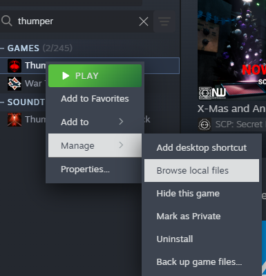
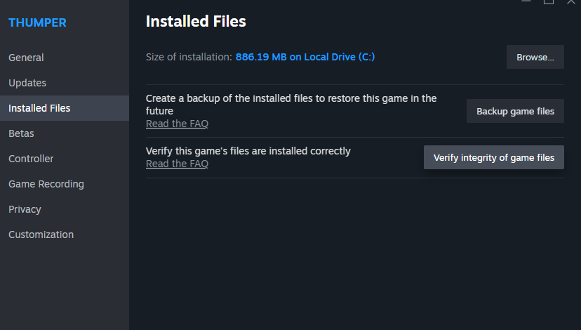
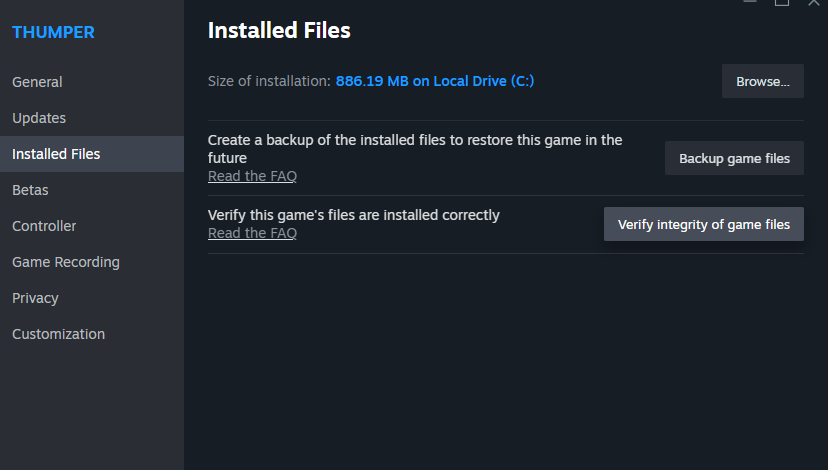

Windows Install Guide
Before we can install Aurora. We need to make sure Java 25 or newer is installed. Open cmd and run java --version. Here's the results of the command below:
'java' is not recognized as an internal or external command,
operable program or batch file.
If this is the case then Java is not installed in the system path at all. Simply proceed to the Installing Java section.
java 25.0.1 2025-10-21 LTS
Java(TM) SE Runtime Environment (build 25.0.1+8-LTS-27)
Java HotSpot(TM) 64-Bit Server VM (build 25.0.1+8-LTS-27, mixed mode, sharing)
If you see something like this then you hava Java installed. In the example you see 25.0.1. This version is okay! If you have a version older than 25 then proceed to the Installing Java section.
Installing Java
You can visit the Oracle website to find the download links. If you're unsure which download to pick, then use this one: Windows x64 MSI Installer.
Simply proceed with the install. After installation launch cmd and run java --version. You should see this information:
java 25.0.1 2025-10-21 LTS
Java(TM) SE Runtime Environment (build 25.0.1+8-LTS-27)
Java HotSpot(TM) 64-Bit Server VM (build 25.0.1+8-LTS-27, mixed mode, sharing)
If this is the case then the installation of Java was successful and you may proceed. If this isn't the case then seek assistance in the Thumper Discord.
Locate Thumper Working Directory
You want to do this via Steam. Open Steam and locate Thumper in your Steam Library. Right click Thumper and select Manage then Browse Local Files.

Reset cache
Thumper's game data is located inside it's cache folder. Aurora expects a full base game install here. So we will delete the cache folder.

After this, in Steam select Properties... then Installed Files then Verify integrety of game files
 

Downloading and Extracting Aurora
Aurora can be downloaded here. There are pre-releases and stable builds. You'll likely be fine with a pre-release build but note that they are technically unstable. If you want to be on the safe side then grab the latest stable build.
You are presented 3 options when downloading: * Aurora.xxx.zip * Source code (zip) * Source code (tar.gz)
You want the Aurora.xxx.zip. Do not download the source code packaged unless you plan on assisting in developing the tools.
Create steam_api64.dll.bak
Once this folder opens you must create a backup file. in the folder you will see steam_api64.dll. You want to copy and paste this file. This copy should be named steam_api64.dll.bak. You'll be warned about changing the file extension; confirm this change.
Extracting Aurora
In this same folder. This is where you will extract your downloaded .zip file. The zip file will contain two files: steam_api64.dll and Aurora xxx.jar you will extract this zip file into the folder opened by Steam. Do not extract the .jar file. Confirm the overwrite for steam_api64.dll.
Verify
At this point Aurora should be installed and ready to go. Launch Thumper and the Aurora window should appear.